Cara memakai semua fitur, langkah demi langkah, untuk guru, wali kelas, fasilitator proyek, dan operator.
SDSMPSMAWindows & MacBook
Sekolah Laboratorium Undiksha Singaraja · Semua contoh di panduan ini memakai data siswa fiktif.
Daftar isi
1Mengenal E-Raport
2Data siswa
3Nilai mapel
4Pengaturan
5Isi rapor per siswa
6Nilai proyek (fasilitator)
7Template Excel, absensi & form
8Cetak, PDF, dan leger
9Data & arsip (backup)
10Kata sandi & Google Authenticator
11Memakai di MacBook
12Tanya jawab & masalah umum
Siapa membaca bagian mana?
Peran
Bagian yang perlu dibaca
Wali kelas
1, 5, 8 (pratinjau), 12
Fasilitator proyek
1, 6, 7 (template & form Excel), 12
Operator / admin
Semua bagian, terutama 2, 3, 4, 7, 8, 9, dan 10
Guru yang mengisi di Excel
7 (Template Excel)
Video tutorialSemua bagian di panduan ini juga dijelaskan dalam video Tutorial-E-Raport.mp4, dengan suara penjelasan. Video dan panduan memakai urutan yang sama, jadi keduanya bisa dipakai bergantian.
Aturan predikat (bawaan)
EE Exceeding Expectations 96–100 ME Meeting Expectations 91–95 AE Approaching Expectations 86–90 BE Below Expectations 80–85
Batas nilai bisa diubah di Pengaturan → Rumus & predikat. Nilai akhir di bawah 80 sementara dicetak BE dan muncul di daftar Perlu dicek.
1Mengenal E-Raport
E-Raport mengubah nilai dari guru menjadi rapor Student Progress Report yang siap dicetak. Semua data tersimpan di laptop, jadi tidak perlu internet.
1Data siswa Impor atau ketik daftar siswa
2Nilai mapel Impor rekap nilai PH/PTS
3Isi rapor ATL, proyek, narasi, kehadiran
4Cetak Printer, PDF, atau leger
Tampilan utama
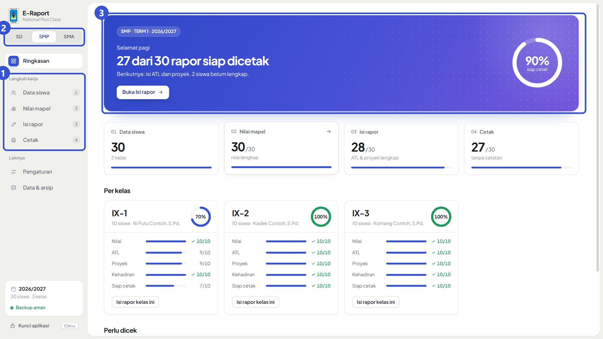
Halaman Ringkasan. 1 menu langkah kerja · 2 pilihan jenjang · 3 kemajuan rapor
Menu di kiri. Empat menu bernomor adalah langkah kerja: Data siswa, Nilai mapel, Isi rapor, dan Cetak. Di bawahnya ada Pengaturan dan Data & arsip.
Jenjang SD · SMP · SMA di kiri atas. Data setiap jenjang disimpan terpisah, jadi pastikan jenjangnya benar sebelum mengisi.
Kotak biru menunjukkan berapa rapor yang siap dicetak, dan tombol untuk langkah berikutnya. Empat kotak di bawahnya menunjukkan kemajuan setiap langkah.
Kiri bawah: tahun ajaran, jumlah siswa, status backup, dan tombol Kunci aplikasi (kalau kata sandi dipasang).
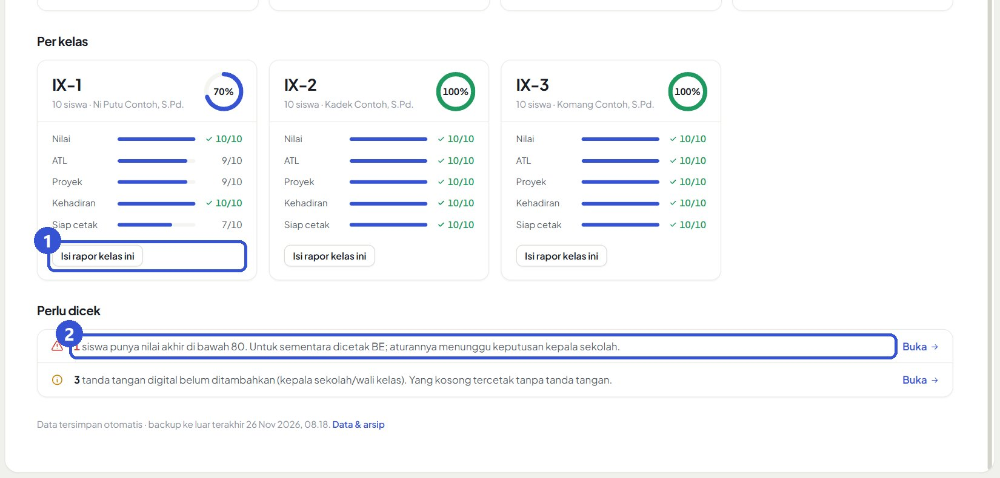
Kemajuan per kelas dan daftar Perlu dicek. 1 buka kelas · 2 hal yang perlu diperiksa
Di bawah Ringkasan ada Per kelas (nilai, ATL, proyek, kehadiran, siap cetak) dan Perlu dicek, yaitu hal yang sebaiknya diperiksa sebelum mencetak. Klik Buka untuk langsung ke tempatnya.
Tersimpan otomatisSemua isian di Data siswa, Nilai mapel, dan Isi rapor langsung tersimpan. Satu-satunya halaman yang memakai tombol Simpan adalah Pengaturan.
2Data siswa
Operator
Masukkan daftar siswa satu kali di awal semester. Yang disimpan hanya nama, NIS, NISN, jenis kelamin, kelas, dan nomor absen. Data pribadi lain seperti NIK, alamat, dan data orang tua tidak disimpan.
Cara 1 · Impor dari Excel
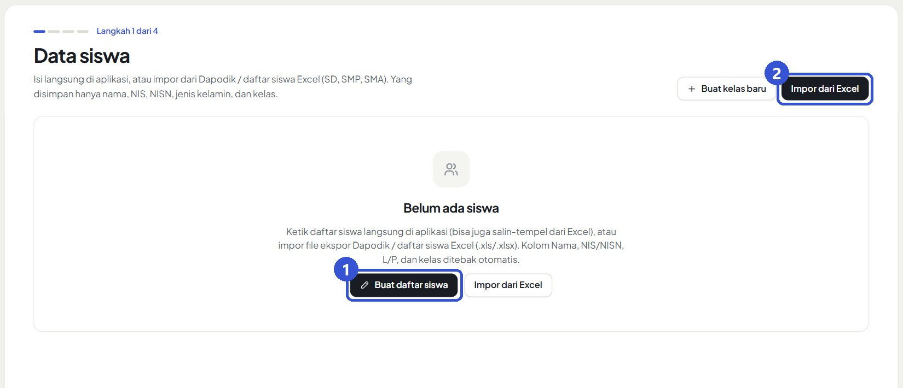
1 ketik sendiri · 2 impor dari Excel
Buka Data siswa, lalu klik Impor dari Excel dan pilih file ekspor Dapodik atau daftar siswa dari wali kelas (.xls/.xlsx). Belum punya file? Pakai Template Excel (lihat bagian 7).
Aplikasi menebak sendiri kolom Nama, NIS, NISN, L/P, dan Kelas. Kalau file memakai satu sheet per kelas, kelas ditebak dari nama sheet. Kalau ada pilihan Sheet, pilih sheet kelas yang akan diimpor.
Periksa Pratinjau. Kalau ada kolom yang keliru, ganti pilihannya di atas. Pratinjau langsung berubah.
Klik Impor. Aplikasi melaporkan berapa siswa yang baru dan yang diperbarui.
Impor ulang amanSiswa yang sudah ada dicocokkan lewat NISN, atau lewat NIS/nama di kelas yang sama, lalu diperbarui. Nilai dan isian rapornya tidak berubah.
Cara 2 · Lembar kelas (seperti Excel)
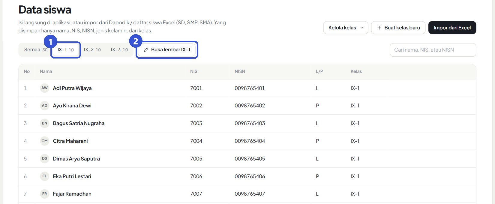
1 pilih kelas · 2 Buka lembar
Klik Buat kelas baru untuk kelas baru, atau pilih tab kelas lalu klik Buka lembar.
Ketik seperti di Excel: nama lengkap, NIS, NISN, L/P, serta jumlah hari S (sakit), I (izin), A (alpa). Tekan Enter untuk pindah ke baris berikutnya.
Bisa salin-tempel: blok beberapa baris dan kolom di Excel, Ctrl+C, klik sel pertama di lembar, lalu Ctrl+V.
Di kolom S/I/A, tekan + atau − untuk menambah atau mengurangi satu hari.
Urutan baris adalah nomor absen. Tombol panah di ujung baris mengubah urutan, dan ikon tempat sampah menghapus baris.
Tulisan Tersimpan otomatis muncul di kanan atas. Klik Tutup lembar kalau sudah selesai.
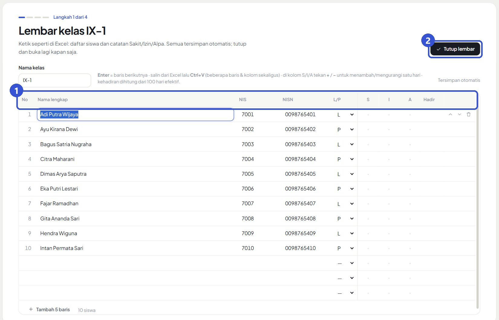
Lembar kelas. 1 kolom isian · 2 Tutup lembar
Mengubah dan mengelola kelas
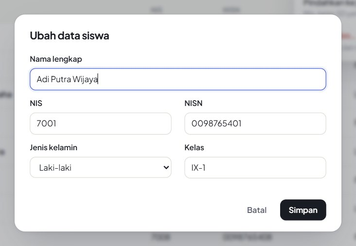
Ubah data satu siswa
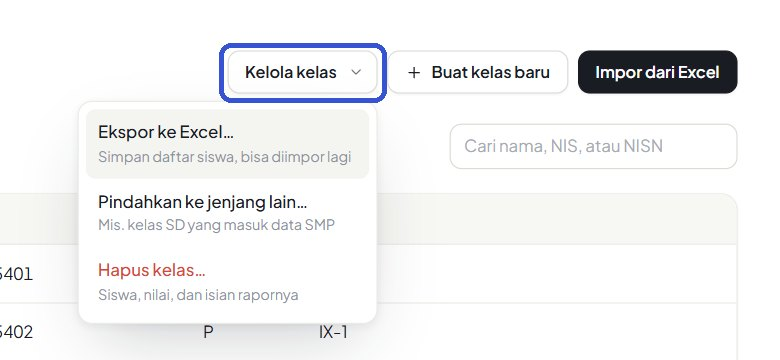
Menu Kelola kelas
Ubah di baris siswa: perbaiki nama, NIS, NISN, jenis kelamin, atau kelas, lalu klik Simpan. Hapus menghapus siswa itu.
Tambah siswa menambah satu siswa ke kelas yang sedang dipilih.
Kelola kelas → Ekspor ke Excel menyimpan daftar siswa yang bisa diimpor lagi, misalnya di laptop lain.
Kelola kelas → Pindahkan ke jenjang lain dipakai kalau kelas masuk ke jenjang yang salah, misalnya kelas SD masuk ke data SMP.
Kelola kelas → Hapus kelas menghapus siswa beserta nilai dan isian rapornya. Aplikasi membuat backup lebih dulu.
3Nilai mapel
Operator
Nilai mapel diimpor dari Excel, jadi guru tidak perlu mengetik ulang. Nilai akhir dan predikat dihitung otomatis.
Impor rekap nilai
Buka Nilai mapel, lalu klik Impor nilai dari Excel dan pilih file rekap. Supaya guru mapel mengisi dengan susunan yang pasti cocok, bagikan Template Excel nilai mapel (bagian 7).
Aplikasi menampilkan mapel yang terbaca. Semua mapel disimpan, jadi kalau nanti ada mapel baru di rapor, tidak perlu impor ulang.
Centang kelas yang akan diimpor, lalu klik Impor.
Hasilnya menunjukkan berapa siswa yang cocok. Nama yang hanya mirip, misalnya singkatan atau salah ejaan, ditandai supaya bisa dicek. Baris yang tidak cocok dengan siswa mana pun tidak dimasukkan.
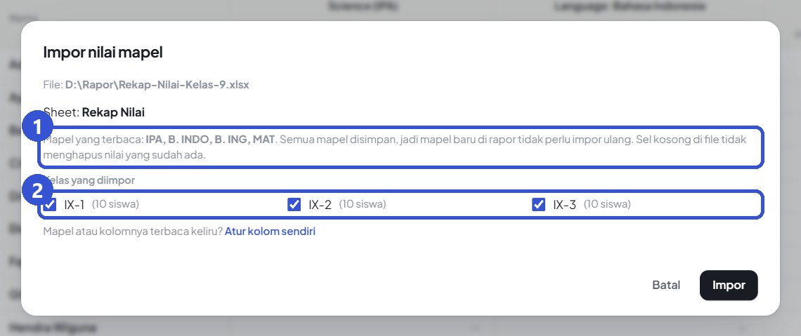
1 mapel yang terbaca · 2 kelas yang diimpor
Sel kosong tidak menghapusSel yang kosong di Excel tidak menghapus nilai yang sudah ada di aplikasi.
Tabel nilai
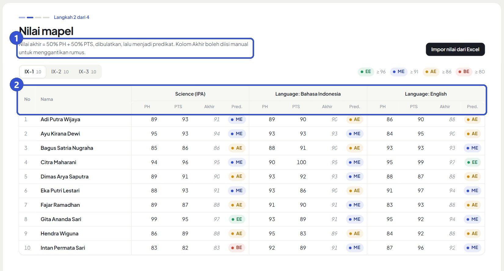
1 rumus yang berlaku · 2 PH, PTS, Akhir, dan Predikat setiap mapel
Rumus bawaan: Nilai akhir = 50% PH + 50% PTS, dibulatkan, lalu menjadi predikat EEMEAEBE.
Nilai bisa diperbaiki langsung di tabel. Kolom Akhir boleh diisi manual untuk menggantikan hasil rumus.
Bobot PH/PTS dan batas predikat diatur di Pengaturan → Rumus & predikat.
File nilai dengan susunan berbeda
Setiap guru membuat file nilai dengan caranya sendiri, misalnya ada kolom NH 1, NH 2, NH 3, rata-rata, PTS, atau satu sheet per mapel. Aplikasi tetap bisa membacanya:
Klik Impor nilai dari Excel seperti biasa. Kalau susunannya bukan format rekap sekolah, jendela atur kolom muncul otomatis. Bisa juga dibuka lewat tautan Atur kolom sendiri.
Periksa kolom Nama siswa (wajib), serta NISN, NIS, dan Kelas kalau ada.
Di Kolom nilai, tentukan setiap kolom masuk sebagai PH, PTS, atau nilai akhir mapel tertentu, atau bukan nilai. Beberapa kolom PH untuk mapel yang sama otomatis dirata-rata.
Kalau file tidak punya kolom kelas, pilih kelasnya di bawah. Kelas juga ditebak dari judul tabel atau nama sheet.
Klik Periksa. Aplikasi menunjukkan berapa siswa yang cocok, nilai yang baru, dan nilai lama yang akan tertimpa. Kalau sudah benar, klik Terapkan.
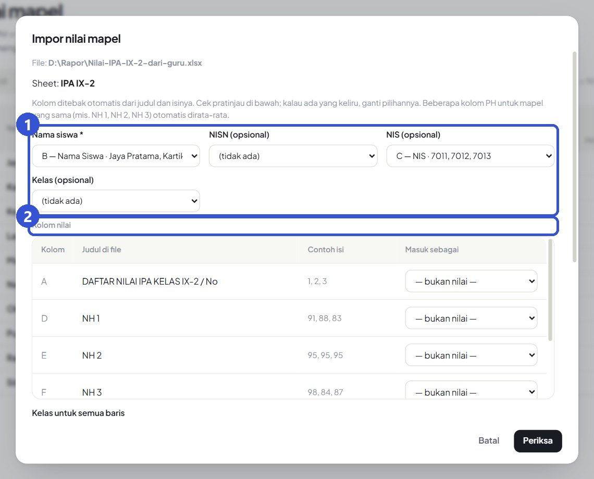
1 kolom identitas · 2 kolom nilai
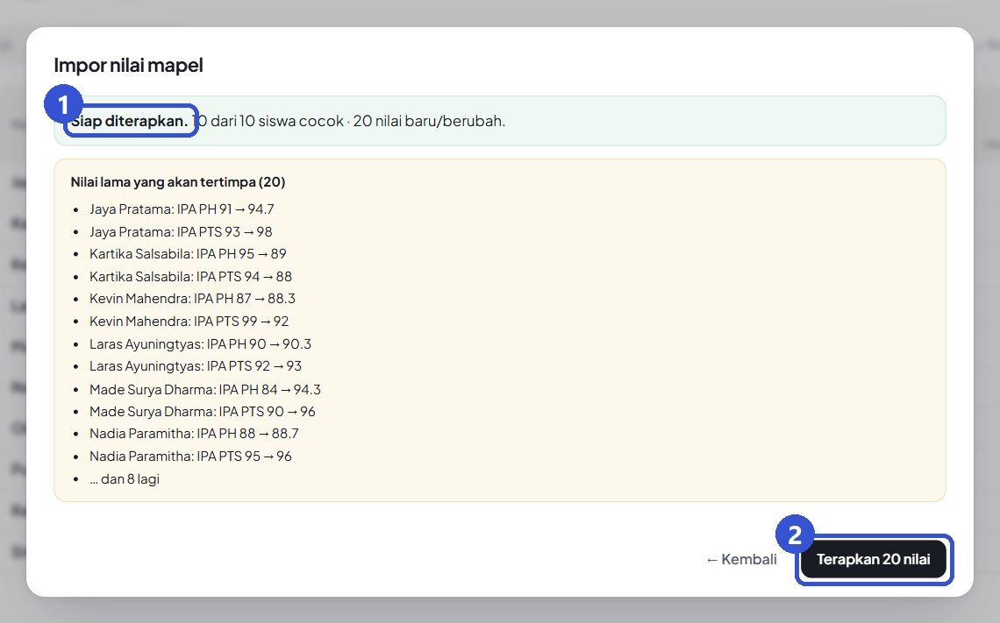
1 ringkasan · 2 Terapkan
4Pengaturan
Operator
Pengaturan berlaku untuk semua rapor di jenjang yang sedang dipilih. Atur sekali di awal, lalu periksa lagi sebelum mencetak.
Jangan lupa klik SimpanSetiap kali ada perubahan di Pengaturan, di bawah muncul tulisan Ada perubahan yang belum disimpan. Klik Simpan. Untuk membatalkan perubahan, klik Batalkan.
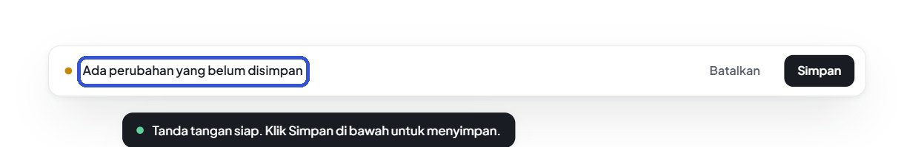
Bilah Simpan muncul setelah ada perubahan
Identitas rapor (kop)
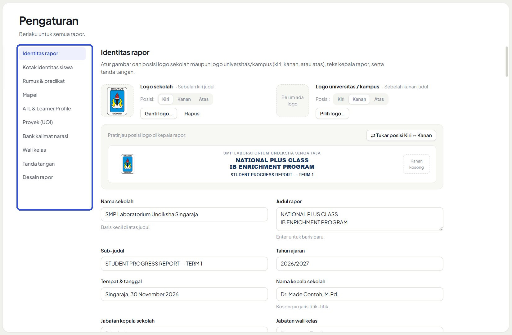
1 daftar isi Pengaturan: klik untuk melompat ke bagian
Logo sekolah dan logo universitas/kampus: pilih gambar dan posisinya (kiri, kanan, atau atas). Ada pratinjau kop dan tombol Tukar posisi.
Nama sekolah, judul rapor (tekan Enter untuk baris baru), sub-judul (mis. TERM 1), tahun ajaran, tempat & tanggal.
Nama dan jabatan kepala sekolah, serta jabatan wali kelas. Kalau nama dikosongkan, rapor mencetak garis titik-titik.
Ukuran kertas: A4, F4/Folio, atau Letter. Ada juga pilihan menampilkan angka di samping predikat mapel, misalnya "ME (92)".
Kotak identitas siswa
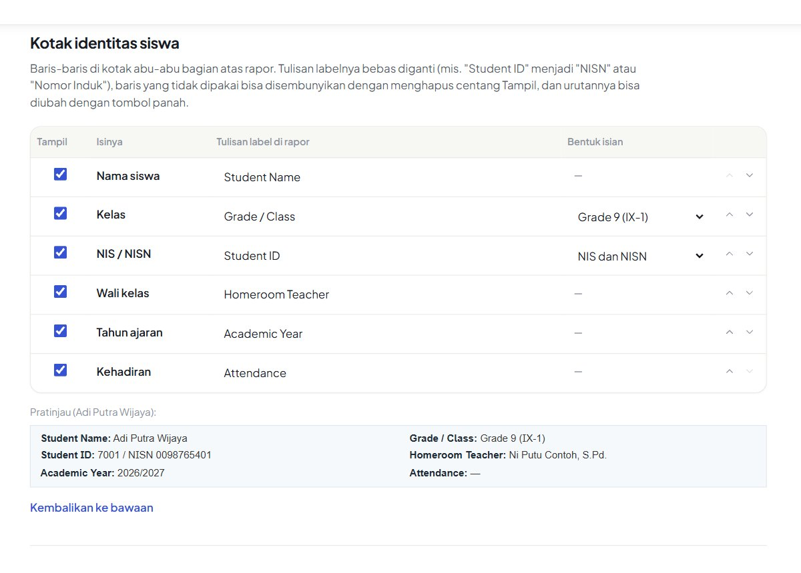
Baris-baris di kotak abu-abu bagian atas rapor
Isi kotak: nama siswa, kelas, NIS/NISN, wali kelas, tahun ajaran, dan kehadiran.
Tulisan label bebas diganti, misalnya "Student ID" menjadi "NISN" atau "Nomor Induk".
Hapus centang Tampil untuk menyembunyikan baris. Tombol panah mengubah urutan.
Bentuk isian: kelas ditulis "Grade 9 (IX-1)" atau "IX-1" saja; nomor siswa berupa NIS dan NISN, NIS saja, atau NISN saja.
Pratinjau di bawah tabel langsung menunjukkan hasilnya. Kembalikan ke bawaan mengembalikan susunan semula.
Rumus & predikat
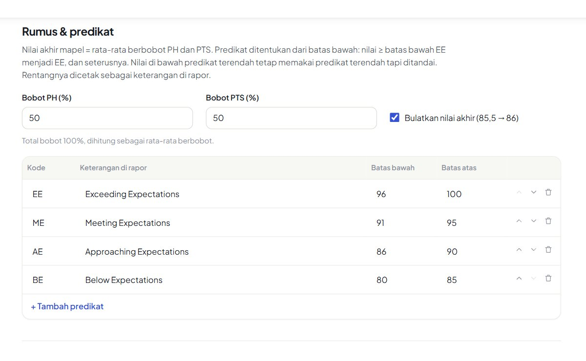
Bobot PH/PTS dan batas predikat
Atur bobot PH dan PTS (totalnya 100%), pembulatan nilai akhir, serta kode, keterangan, dan batas bawah/atas setiap predikat. Predikat ditentukan dari batas bawah. Rentangnya dicetak sebagai keterangan di rapor.
Mapel
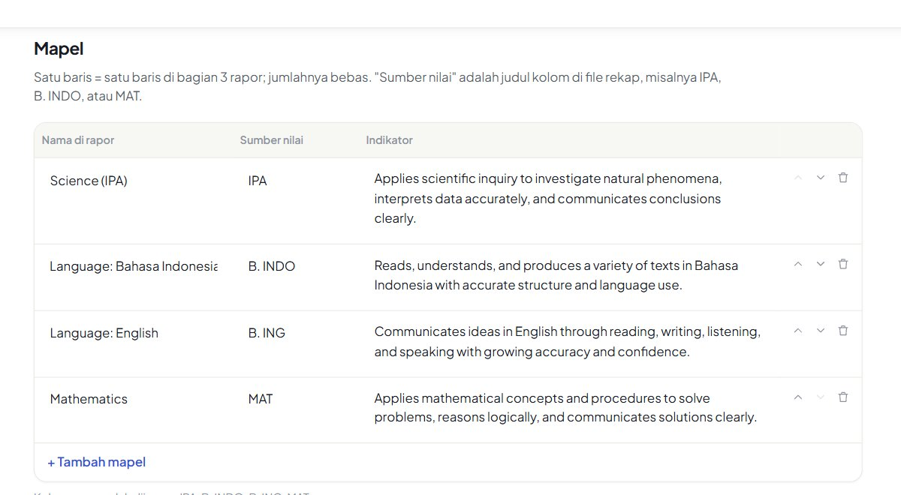
Satu baris = satu mapel di bagian 3 rapor
Nama di rapor, misalnya "Science (IPA)".
Sumber nilai adalah judul kolom di file rekap, misalnya IPA, B. INDO, atau MAT. Di bawah tabel tertulis kolom apa saja yang sudah diimpor.
Indikator: teks penjelasan yang tercetak di rapor. Klik + Tambah mapel untuk menambah. Jumlah mapel bebas.
ATL & Learner Profile
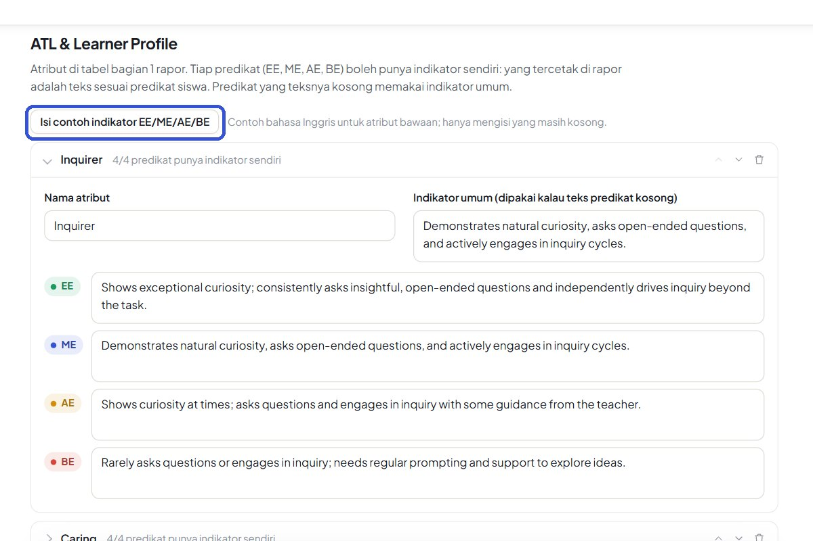
Indikator per predikat untuk satu atribut
Tujuh atribut bawaan: Inquirer, Caring, Communicator, Reflective, Thinking Skills, Social Skills, Self-Management. Klik nama atribut untuk membukanya.
Setiap predikat (EE/ME/AE/BE) boleh punya indikator sendiri. Yang tercetak adalah teks yang sesuai dengan predikat siswa. Predikat yang teksnya kosong memakai indikator umum.
Isi contoh indikator EE/ME/AE/BE mengisi contoh teks bahasa Inggris, hanya untuk yang masih kosong.
Proyek (UOI) & bank kalimat
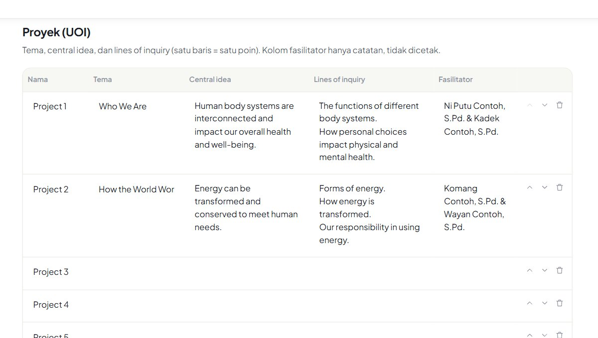
Tema, central idea, lines of inquiry, dan fasilitator
Proyek: isi tema, central idea, lines of inquiry (satu baris = satu poin), dan nama fasilitator untuk setiap proyek.
Bank kalimat narasi: kalimat siap pakai per kelompok predikat. Tulisan {name} diganti nama siswa, {he}/{their} diganti he/she dan his/her, dan {theme} diganti tema proyek.
Wali kelas & tanda tangan
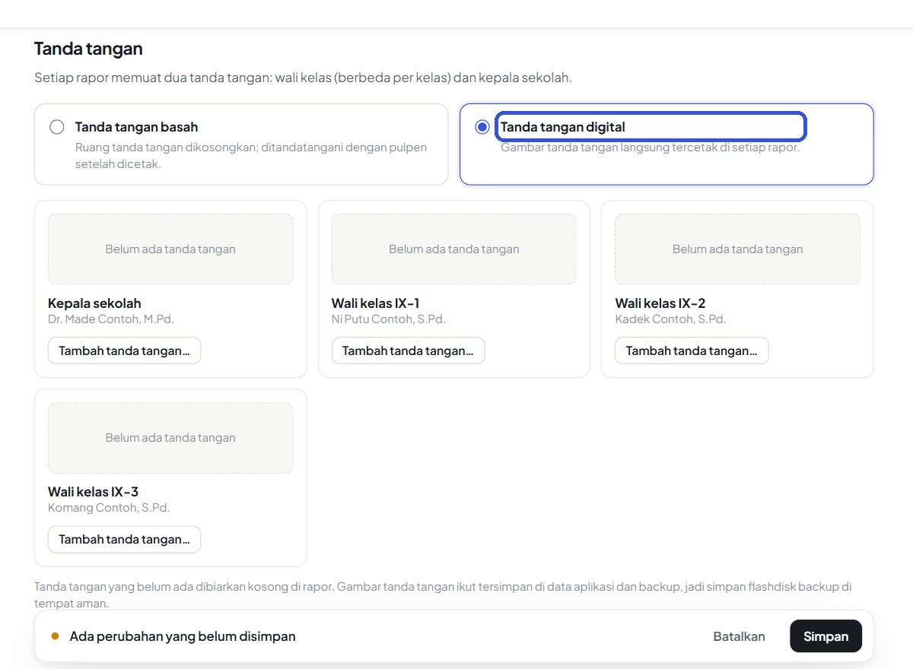
1 pilih Tanda tangan digital
Di Wali kelas, tulis nama wali kelas lengkap dengan gelar untuk setiap kelas.
Di Tanda tangan, pilih Tanda tangan basah (ditandatangani dengan pulpen setelah dicetak) atau Tanda tangan digital (gambarnya tercetak di setiap rapor).
Untuk tanda tangan digital, klik Tambah tanda tangan… pada kepala sekolah dan setiap wali kelas, lalu pilih salah satu cara:
Dari foto / gambar: foto tanda tangan di kertas putih polos, dari atas dengan cahaya terang. Latar kertas dihapus otomatis. Bisa juga menempel screenshot dengan Ctrl+V.
Gambar langsung: tanda tangan dengan mouse, touchpad, atau pen. Ada tombol Urungkan/Ulangi dan pilihan warna tinta.
Klik Simpan tanda tangan, lalu Simpan di bilah bawah Pengaturan.
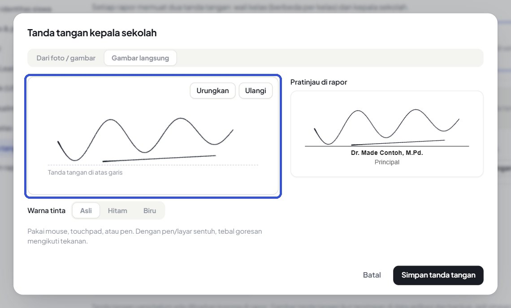
Menggambar tanda tangan, dengan pratinjau di rapor
Simpan flashdisk di tempat amanGambar tanda tangan ikut tersimpan di data aplikasi dan di backup.
Desain rapor
Rapor memakai desain bawaan yang mengikuti template sekolah. Operator yang ingin mengubah tampilan rapor bisa klik Salin desain bawaan ke folder data, lalu mengedit file template-rapor.html di folder data. Aplikasi otomatis memakai file itu. Bagian ini tidak perlu diubah oleh guru.
5Isi rapor per siswa
Wali kelas
Bagian ini paling sering dipakai: mengisi kehadiran, ATL & Learner Profile, proyek, dan narasi untuk setiap siswa. Tidak perlu menekan Simpan.
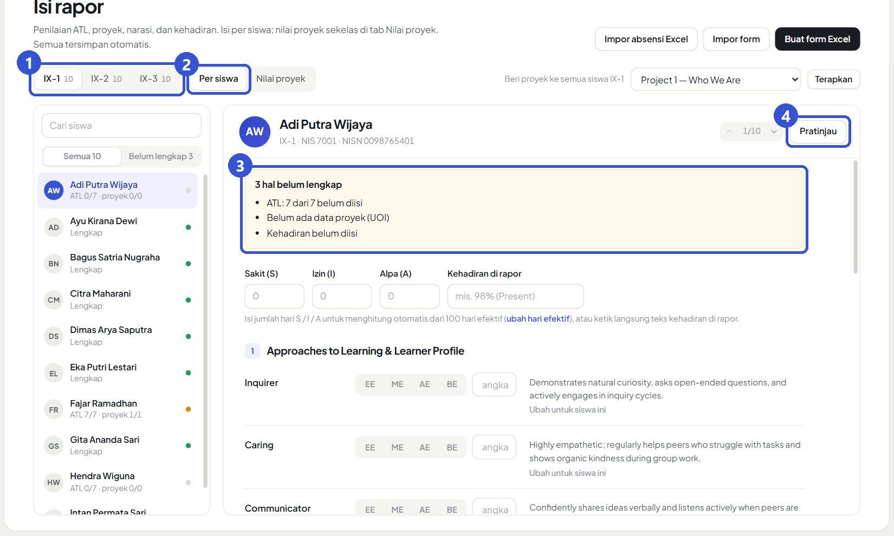
1 pilih kelas · 2 tab Per siswa · 3 yang belum lengkap · 4 Pratinjau
Buka Isi rapor, pilih kelas di tab atas, dan pastikan tab Per siswa aktif.
Klik nama siswa di daftar kiri. Titik hijau berarti lengkap, titik oranye berarti ada catatan, dan titik abu-abu berarti belum diisi.
Kotak kuning di atas formulir menyebutkan apa saja yang belum lengkap untuk siswa itu.
Kehadiran
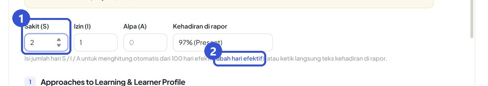
1 jumlah hari S / I / A · 2 ubah hari efektif
Isi jumlah hari Sakit (S), Izin (I), dan Alpa (A). Kehadiran di rapor dihitung otomatis, misalnya 97% (Present).
Rumusnya: (hari efektif − (S + I + A)) ÷ hari efektif × 100%. Klik ubah hari efektif untuk mengganti total hari efektif semester. Kehadiran semua siswa ikut dihitung ulang.
Teks kehadiran juga boleh diketik langsung.
Bagian 1 · ATL & Learner Profile
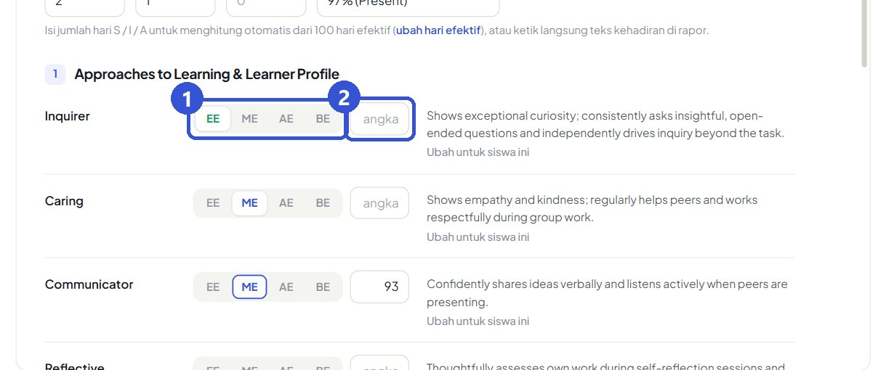
1 klik predikat · 2 atau ketik angka
Untuk setiap atribut, klik EEMEAEBE, atau ketik angka 0–100 di kotak angka. Angkanya otomatis diubah menjadi predikat.
Teks indikator di sebelah kanan ikut berganti sesuai predikat.
Butuh teks khusus untuk satu siswa? Klik Ubah untuk siswa ini, lalu ketik teksnya. Untuk kembali, klik Pakai indikator bawaan.
Bagian 2 · Proyek (UOI) dan narasi
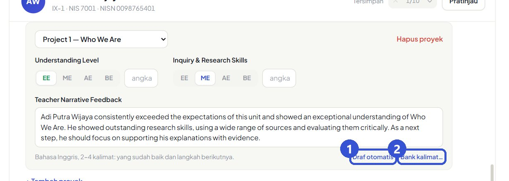
1 Draf otomatis · 2 Bank kalimat
Klik + Tambah proyek dan pilih proyeknya. Satu siswa boleh punya lebih dari satu proyek. Hapus proyek menghapusnya.
Isi Understanding Level dan Inquiry & Research Skills.
Teacher Narrative Feedback (bahasa Inggris, 2–4 kalimat):
Draf otomatis menyusun draf sesuai predikat, lengkap dengan nama siswa dan he/she. Baca, lalu sesuaikan dengan pengamatan Anda.
Bank kalimat… menampilkan kalimat siap pakai. Kalimat yang cocok dengan predikat siswa ada di paling atas. Klik + Tambah untuk memasukkannya ke akhir narasi.
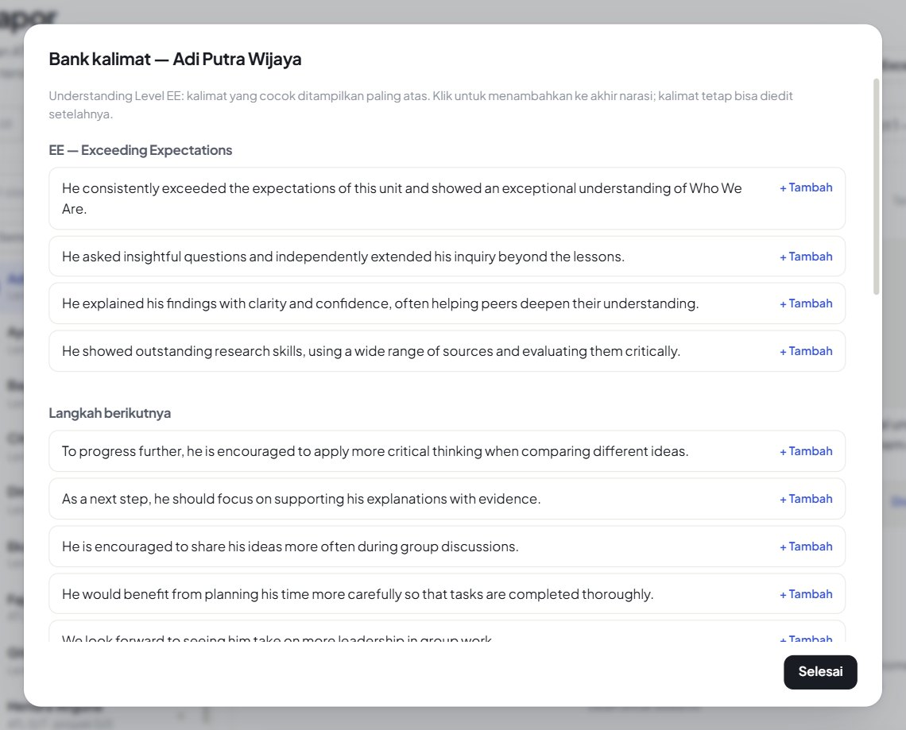
Bank kalimat untuk satu siswa
Bagian 3 · Nilai mapel
Nilai dan predikat mapel diambil otomatis dari halaman Nilai mapel, jadi wali kelas tidak perlu mengetik nilai. Indikator mapel boleh diubah khusus untuk satu siswa lewat Ubah untuk siswa ini.
Pratinjau dan pindah siswa
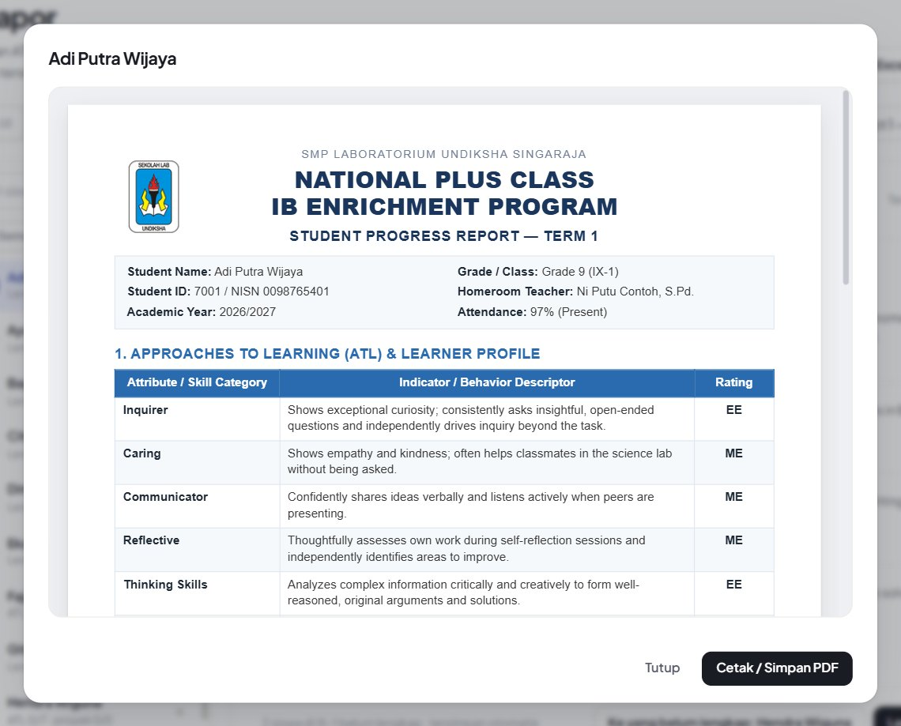
Pratinjau rapor satu siswa, persis seperti saat dicetak
Pratinjau (kanan atas) menampilkan rapor siswa persis seperti saat dicetak. Dari jendela itu rapor juga bisa langsung dicetak.
Di bagian bawah: Lanjut ke … pindah ke siswa berikutnya, dan Ke yang belum lengkap langsung membuka siswa yang belum selesai. Tombol panah ↑/↓ di samping nama siswa juga bisa dipakai.
Di daftar siswa, pilih Belum lengkap untuk menampilkan siswa yang belum selesai saja. Kotak Cari siswa membantu mencari nama.
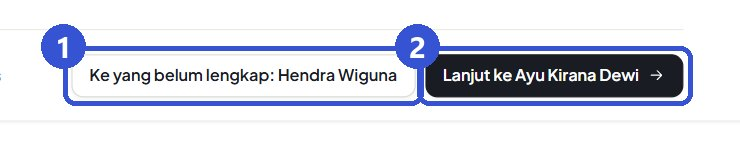
1 ke yang belum lengkap · 2 lanjut ke siswa berikutnya
6Nilai proyek (fasilitator)
Fasilitator proyek
Fasilitator mengisi nilai satu proyek untuk satu kelas sekaligus, dalam satu tabel.
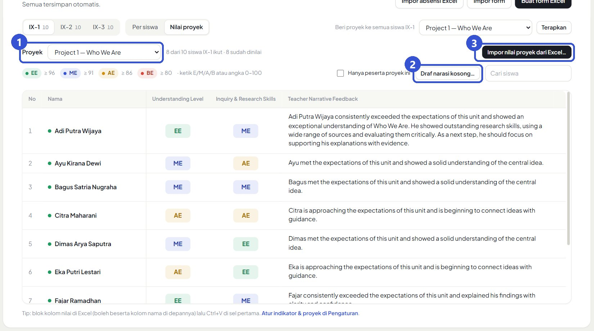
1 pilih proyek · 2 draf narasi yang kosong · 3 impor dari Excel
Buka Isi rapor, pilih kelas, lalu tab Nilai proyek, dan pilih Proyek.
Isi Understanding Level dan Inquiry & Research Skills. Cukup ketik huruf awal: E → EEM → MEA → AEB → BE, atau angka 0–100. Tekan Enter atau ↓ untuk turun ke siswa berikutnya.
Siswa otomatis ikut proyek begitu nilainya diisi. Untuk memberi proyek ke semua siswa sekelas, pilih proyek di kanan atas (Beri proyek ke semua siswa), lalu klik Terapkan.
Centang Hanya peserta proyek ini untuk menyembunyikan siswa yang tidak ikut proyek.
Draf narasi kosong… membuat draf narasi untuk semua siswa yang narasinya masih kosong. Narasi yang sudah ada tidak diubah.
Tempel dari ExcelBlok kolom nilai di Excel (boleh beserta kolom nama di depannya), tekan Ctrl+C, klik sel pertama di tabel, lalu tekan Ctrl+V. Kalau kolom pertama berisi nama, baris dicocokkan lewat nama, jadi urutannya boleh berbeda.
Impor nilai proyek dari Excel
Klik Impor nilai proyek dari Excel… dan pilih filenya.
Kolom (nama, kelas, Understanding, Inquiry, narasi) dan proyeknya ditebak dari nama sheet atau judul tabel. Ganti pilihannya kalau keliru. Predikat boleh ditulis EE/ME/AE/BE, E/M/A/B, atau angka.
Klik Periksa, baca ringkasannya (isian yang tertimpa dan siswa baru), lalu klik Terapkan.
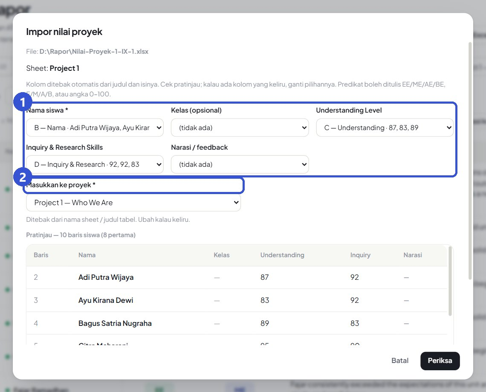
1 kolom yang ditebak · 2 proyek tujuan
7Template Excel, absensi & form
Operator · guru mapel · wali kelas · fasilitator
Setiap guru biasanya membuat file Excel dengan caranya sendiri. Supaya semua data seragam, sekolah memakai empat template Excel baku yang sama untuk SD, SMP, dan SMA. Guru tinggal mengunduh template, mengisinya, lalu menyerahkannya ke operator. File langsung terbaca aplikasi tanpa perlu mengatur kolom.
Empat template baku
File
Kolom
Dimasukkan lewat
Template 1 - Data Siswa
No · Nama Siswa · NIS · NISN · Kelas · L/P
Data siswa → Impor dari Excel
Template 2 - Nilai Mapel
Kotak kuning Mata pelajaran, lalu No · Nama Siswa · NIS · NISN · Kelas · PH · PTS
Nilai mapel → Impor nilai dari Excel
Template 3 - Nilai Proyek
Kotak kuning Proyek, lalu No · Nama Siswa · NIS · NISN · Kelas · Understanding Level · Inquiry & Research Skills · Teacher Narrative Feedback
Isi rapor → Nilai proyek → Impor nilai proyek dari Excel
Template 4 - Absensi
No · Nama Siswa · NIS · NISN · Kelas · Sakit · Izin · Alpa
Isi rapor → Impor absensi Excel
Lima kolom pertama selalu samaNo, Nama Siswa, NIS, NISN, dan Kelas ada di semua template dengan urutan yang sama. Kalau NISN diisi, siswa pasti cocok; kalau tidak, siswa dicocokkan lewat nama dan kelas.
Mendapatkan template
File siap bagi: keempat template kosong ada di folder template-excel (bersama aplikasi). Bagikan lewat WhatsApp, flashdisk, atau Google Drive.
Dari aplikasi: klik Template Excel di halaman Data siswa, Nilai mapel, atau tab Nilai proyek. Pilih jenisnya, lalu klik Simpan template….
Dari aplikasi, centang Cantumkan daftar siswa dari aplikasi supaya nama, NIS, NISN, dan kelas sudah terisi. Guru tinggal mengisi nilai dan tidak ada salah ketik nama. Susunan kolomnya tetap sama dengan template kosong.
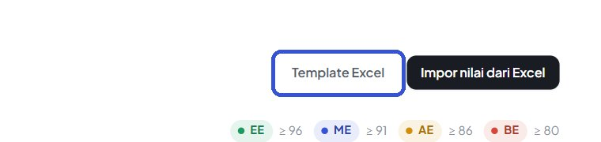
Tombol Template Excel (contoh di halaman Nilai mapel)
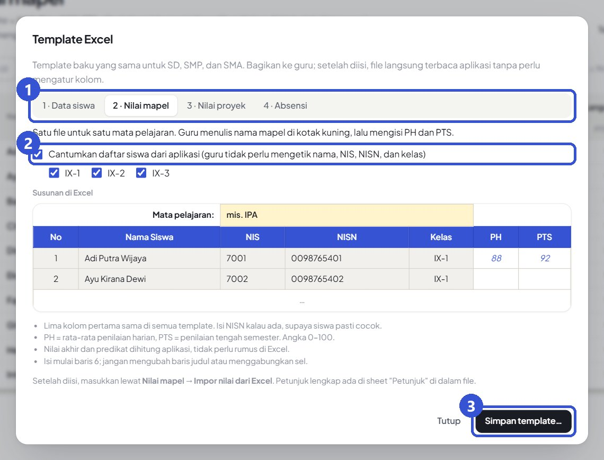
1 jenis template · 2 cantumkan daftar siswa · 3 Simpan template
Cara mengisi (untuk guru)
Nilai mapel: satu file untuk satu mata pelajaran. Tulis nama mapel di kotak kuning (baris 2), misalnya IPA, Matematika, atau Bahasa Inggris. Satu file boleh berisi beberapa kelas.
Nilai proyek: satu file untuk satu proyek. Tulis nama atau tema proyek di kotak kuning, misalnya Project 1 atau Who We Are.
Isi data mulai baris 6, satu baris untuk satu siswa. Baris 1–5 (judul) jangan diubah.
Kelas ditulis dengan pola yang sama, misalnya I-A, VII-1, X-B.
Nilai mapel: angka 0–100 (boleh desimal). Nilai proyek: EE/ME/AE/BE, huruf awalnya (E, M, A, B), atau angka. Absensi: jumlah hari (angka bulat).
Jangan menggabungkan sel dan jangan menyisipkan kolom baru. Nilai akhir, predikat, dan persentase kehadiran dihitung aplikasi, jadi tidak perlu rumus di Excel.
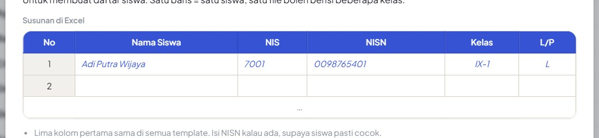
Template 1 - Data Siswa
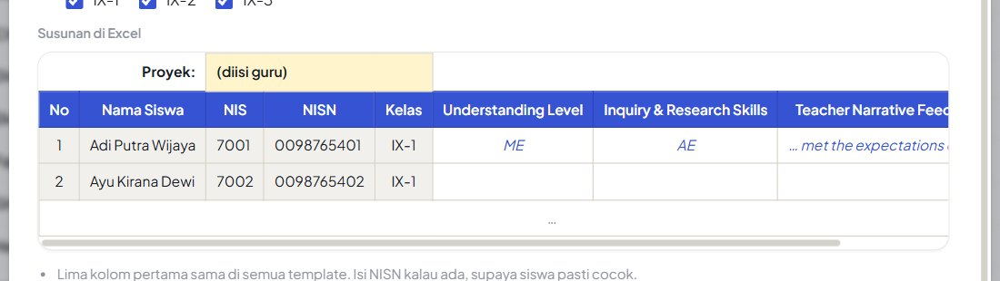
Template 3 - Nilai Proyek: nama proyek di kotak kuning
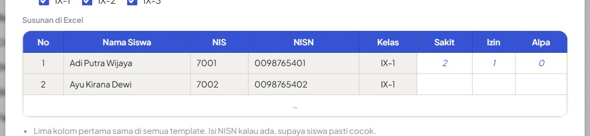
Template 4 - Absensi: jumlah hari sakit, izin, dan alpa
Memasukkan template yang sudah diisi (untuk operator)
Pakai tombol impor yang biasa. Aplikasi langsung mengenali kolomnya dan nama mapel atau proyek di kotak kuning. Nama mapel dalam bahasa Indonesia juga dikenali, misalnya "Matematika" untuk mapel Mathematics. Periksa pratinjaunya, klik Periksa, lalu Terapkan.
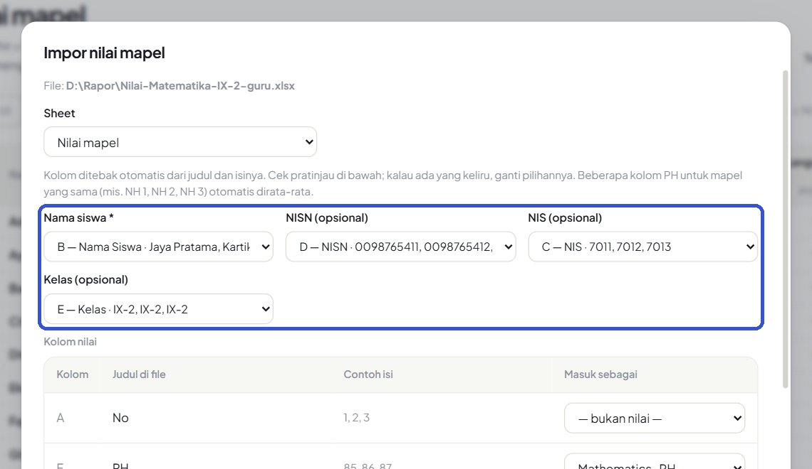
Template nilai mapel yang diisi guru: kolom identitas langsung terbaca
Sel yang dibiarkan kosong tidak menghapus isian yang sudah ada di aplikasi.
Template atau form Excel?Template dipakai untuk mengumpulkan satu jenis data (nilai mapel, nilai proyek, absensi, atau daftar siswa). Buat form Excel (di bawah) dipakai kalau wali kelas atau fasilitator ingin mengisi semua isian rapor (ATL, proyek, kehadiran) di Excel lalu mengirimkannya kembali.
Tombol Excel di halaman Isi rapor
Tiga tombol di kanan atas halaman Isi rapor: Impor absensi Excel, Impor form, dan Buat form Excel.
Impor absensi Excel
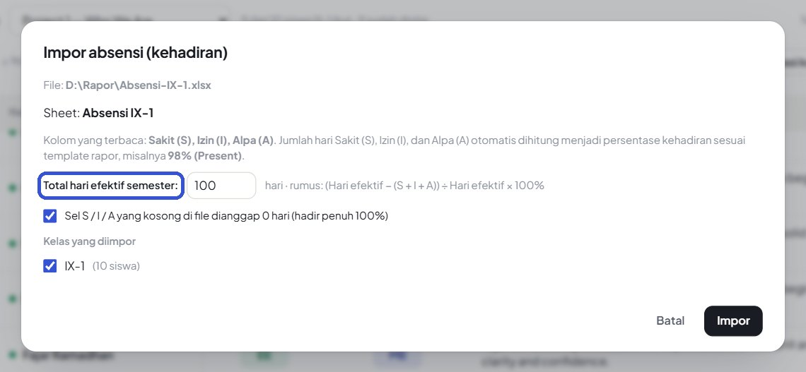
1 total hari efektif semester
Klik Impor absensi Excel dan pilih rekap absensi yang punya kolom Nama serta Sakit/Izin/Alpa (atau S/I/A).
Periksa total hari efektif. Biarkan centang "sel kosong dianggap 0 hari" kalau sel kosong berarti hadir.
Centang kelasnya, lalu klik Impor. Persentase kehadiran semua siswa langsung dihitung.
Form Excel untuk guru yang tidak memakai aplikasi
Klik Buat form Excel.
Pilih kelas dan kolom yang diisi: ATL, proyek (Understanding, Inquiry, narasi), atau kehadiran (S/I/A dengan rumus % otomatis).
Untuk proyek, pilih semua proyek atau satu proyek saja, dan centang "Hanya siswa yang sudah diberi proyek ini" kalau perlu.
Klik Simpan form…, lalu kirim file itu ke guru.
Guru mengisi kolom putih saja di Microsoft Excel. Kolom abu-abu (ID, kelas, nama) jangan diubah.
Setelah form dikirim kembali, klik Impor form. Aplikasi menunjukkan berapa isian yang berubah. Klik Terapkan.
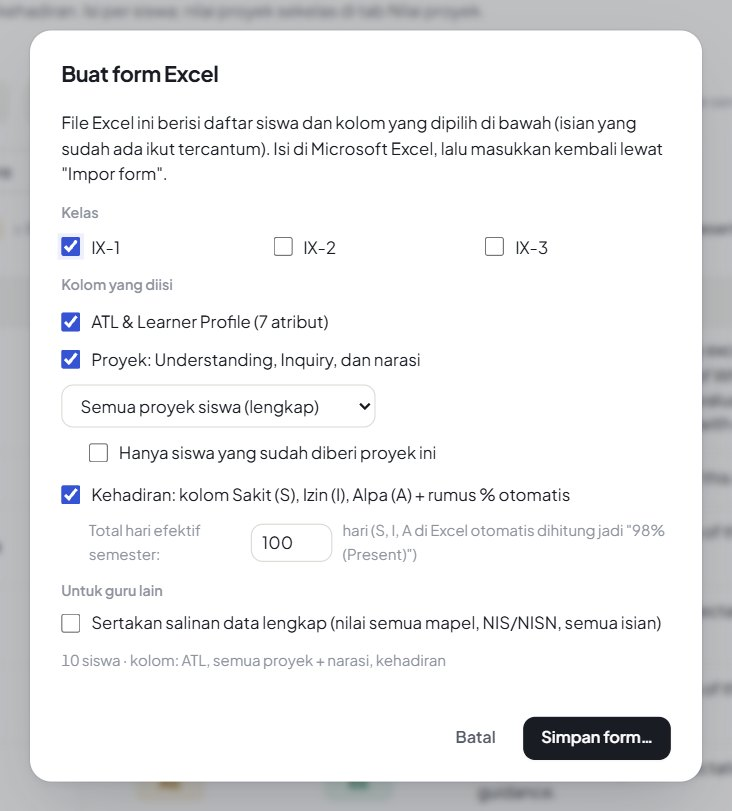
Pilihan kelas dan kolom
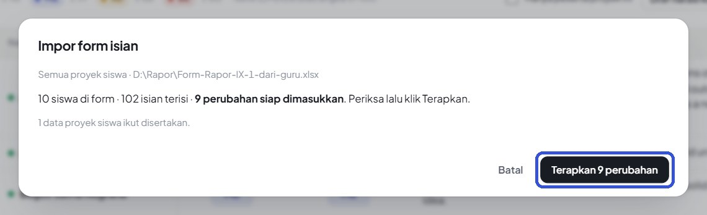
Form yang kembali: periksa, lalu 1 Terapkan
"Sertakan salinan data lengkap"Jangan centang pilihan ini untuk guru biasa. Pilihan ini hanya untuk memindahkan seluruh data (nilai semua mapel, NIS/NISN) ke aplikasi E-Raport di laptop lain.
8Cetak, PDF, dan leger
Operator · wali kelas
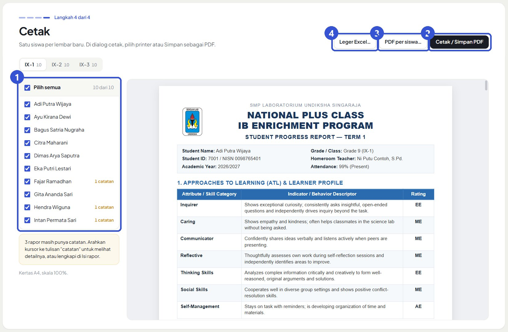
1 pilih siswa · 2 Cetak / Simpan PDF · 3 PDF per siswa · 4 Leger Excel
Mencetak
Buka Cetak dan pilih kelas.
Centang siswa yang akan dicetak (Pilih semua untuk sekelas). Siswa yang masih punya catatan diberi tanda. Arahkan kursor ke tulisan "catatan" untuk melihat detailnya.
Periksa pratinjau di kanan.
Klik Cetak / Simpan PDF. Setiap siswa tercetak di lembar baru. Di jendela cetak, pilih printer atau Simpan sebagai PDF, ukuran kertas sesuai Pengaturan (mis. A4), dan skala 100%.
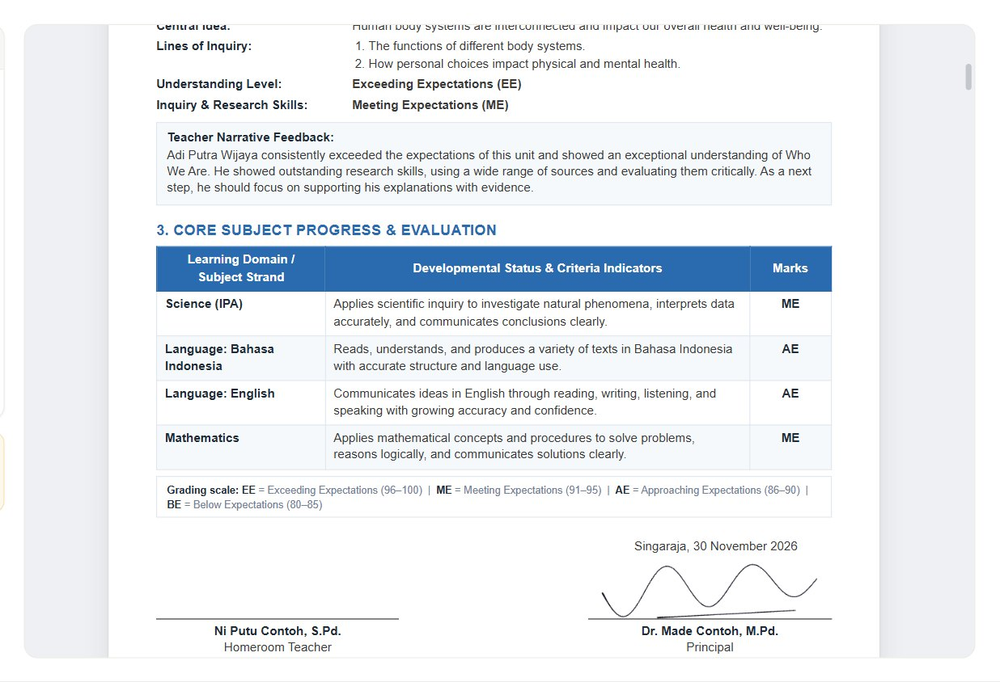
Bagian bawah rapor: nilai mapel, keterangan predikat, dan tanda tangan
PDF per siswa
Klik PDF per siswa…, lalu pilih folder. Satu file PDF dibuat untuk setiap siswa yang dicentang, dengan nama siswa sebagai nama file. Cocok untuk dikirim ke orang tua atau diarsipkan. (Di Windows memakai Microsoft Edge yang sudah terpasang; di MacBook perlu Google Chrome.)
Leger Excel
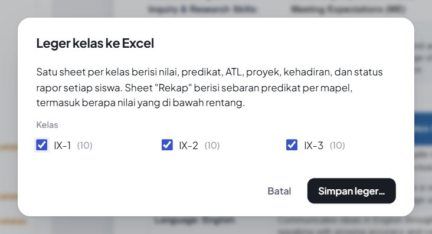
Pilih kelas lalu Simpan leger
Klik Leger Excel…, centang kelas, lalu Simpan leger…. File Excel berisi satu sheet per kelas (nilai, predikat, ATL, proyek, kehadiran, dan status rapor setiap siswa), ditambah sheet Rekap yang berisi sebaran predikat per mapel.
9Data & arsip (backup)
Operator
Data tersimpan di laptop. Kalau laptop rusak atau hilang, data ikut hilang, kecuali sudah di-backup ke flashdisk.
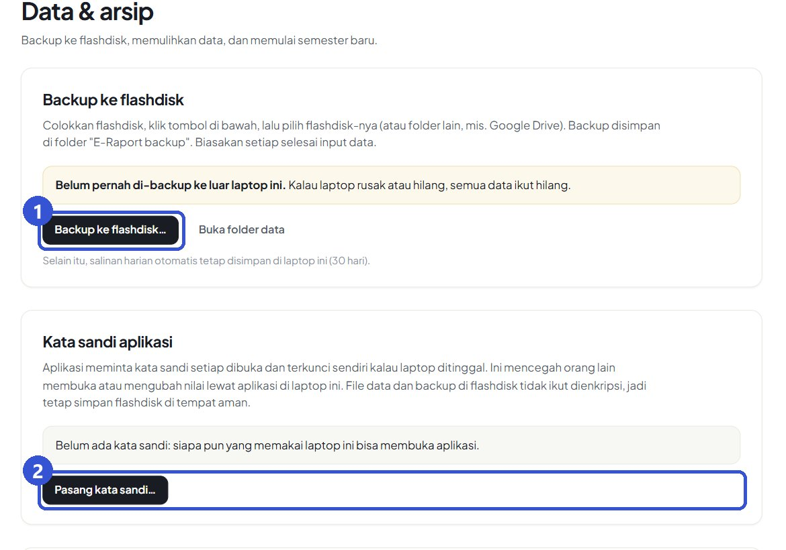
1 Backup ke flashdisk · 2 Pasang kata sandi
Backup ke flashdisk
Colokkan flashdisk, buka Data & arsip, dan klik Backup ke flashdisk….
Pilih flashdisk-nya, atau folder lain seperti Google Drive. Backup disimpan di folder E-Raport backup.
Statusnya berubah menjadi Semua perubahan sudah di-backup. Status ini juga terlihat di kiri bawah layar.
Biasakan setiap selesai mengisiSelain backup ke flashdisk, aplikasi juga menyimpan salinan harian otomatis di laptop selama 30 hari. Buka folder data menampilkan lokasi data di laptop.
Pulihkan data
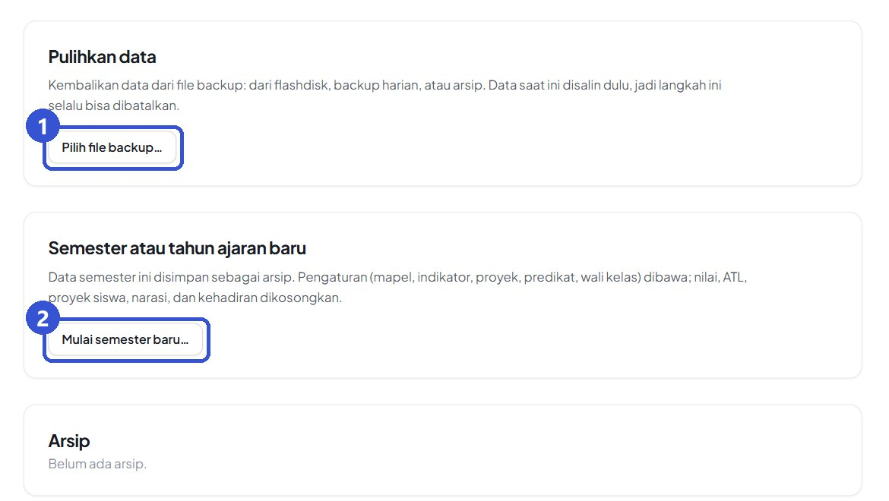
1 Pulihkan · 2 Semester baru
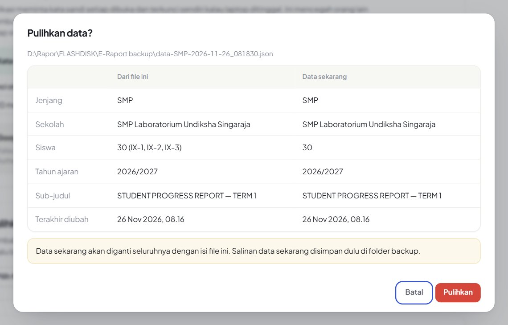
Perbandingan file backup dan data sekarang
Klik Pilih file backup… dan pilih file dari flashdisk, backup harian, atau arsip.
Bandingkan isi file dengan data sekarang (jenjang, sekolah, jumlah siswa, tahun ajaran, waktu terakhir diubah).
Klik Pulihkan. Data sekarang disalin dulu ke folder backup, jadi langkah ini selalu bisa dibatalkan.
Semester atau tahun ajaran baru
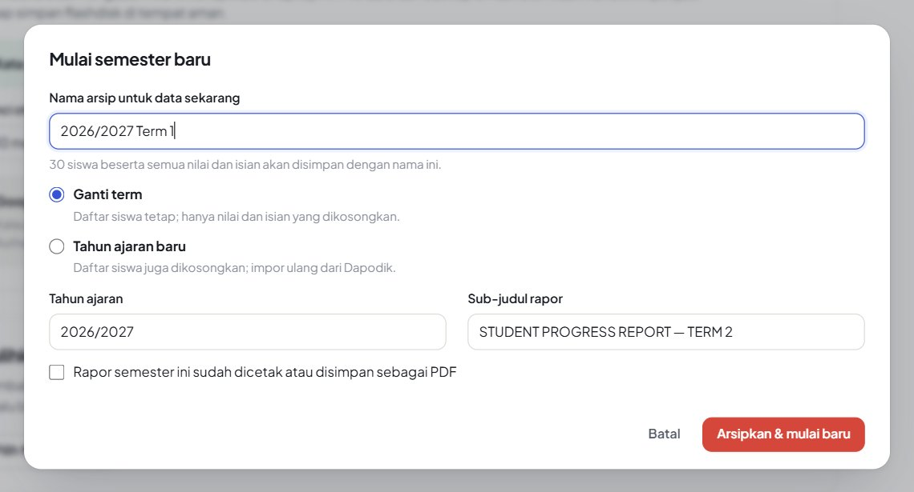
Arsipkan semester ini dan mulai yang baru
Klik Mulai semester baru…. Data semester ini disimpan sebagai arsip dengan nama yang bisa diubah.
Ganti term: daftar siswa tetap, sedangkan nilai dan isian dikosongkan. Tahun ajaran baru: daftar siswa juga dikosongkan, lalu impor ulang dari Dapodik.
Pengaturan (mapel, indikator, proyek, predikat, wali kelas) dibawa ke semester baru. Isi tahun ajaran dan sub-judul rapor yang baru, lalu centang konfirmasi bahwa rapor semester ini sudah dicetak.
Arsip lama tampil di bagian Arsip dan bisa dibuka lagi lewat Pulihkan data.
Jenjang SD · SMP · SMA
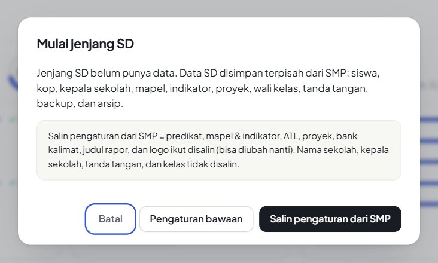
Membuka jenjang baru untuk pertama kali
Saat pertama kali membuka jenjang lain, aplikasi bertanya apakah pengaturannya mau disalin dari jenjang yang sudah ada (predikat, mapel, indikator, ATL, proyek, bank kalimat, judul rapor, dan logo). Nama sekolah, kepala sekolah, tanda tangan, dan kelas tidak ikut disalin.
10Kata sandi & Google Authenticator
Operator · pemilik laptop
Kata sandi mencegah orang lain, misalnya siswa, membuka atau mengubah nilai lewat aplikasi di laptop ini.
Memasang kata sandi
Di Data & arsip, klik Pasang kata sandi….
Ketik kata sandi baru dua kali (minimal 6 karakter), misalnya "rapor-kelas9-lab".
Aplikasi menampilkan kode pemulihan, yang hanya muncul sekali. Foto kode itu dengan HP atau tulis di kertas dan simpan di tempat aman. Jangan disimpan di laptop atau flashdisk backup, dan jangan dikirim ke grup WhatsApp.
Centang "Saya sudah mencatat kode ini", lalu klik Selesai.
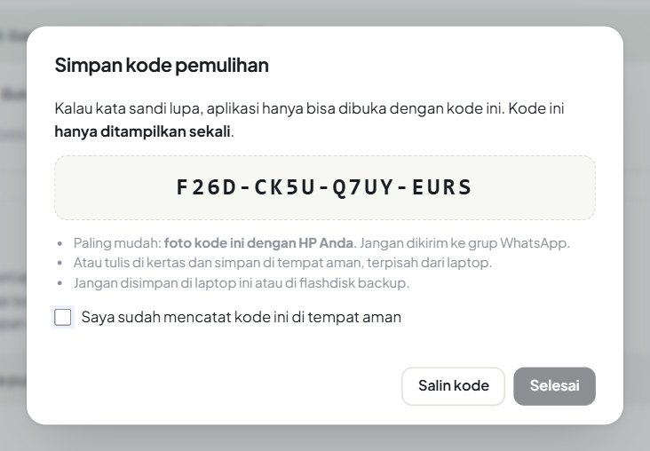
Kode pemulihan (contoh)
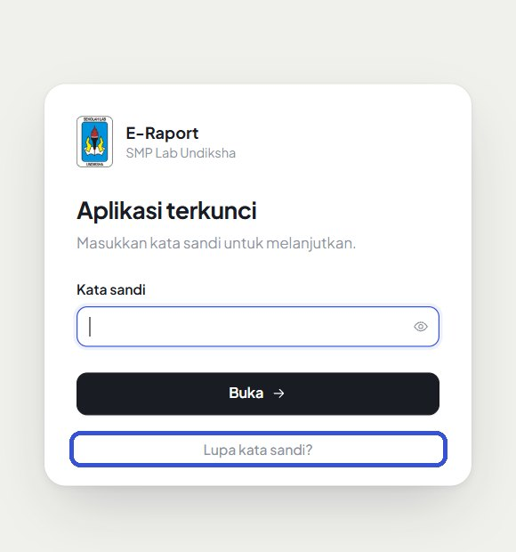
Layar kunci. 1 Lupa kata sandi?
Mengunci aplikasi
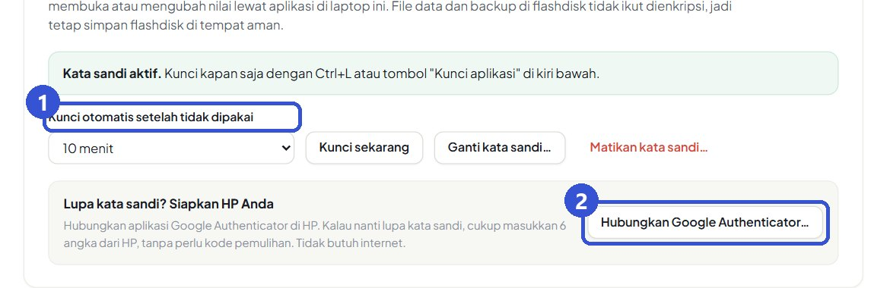
1 kunci otomatis · 2 hubungkan Google Authenticator
Tekan Ctrl+L (MacBook: ⌘+L) atau klik Kunci aplikasi di kiri bawah saat meninggalkan laptop.
Kunci otomatis: aplikasi terkunci sendiri kalau tidak dipakai selama 5, 10, 15, 30 menit, atau 1 jam.
Ganti kata sandi… dan Matikan kata sandi… ada di tempat yang sama.
Menghubungkan Google Authenticator
Pasang aplikasi Google Authenticator di HP (gratis, dari Play Store atau App Store).
Klik Hubungkan Google Authenticator…, ketik kata sandi sekarang, lalu klik Lanjut. Kode QR muncul.
Di Google Authenticator, ketuk + lalu Pindai kode QR, dan arahkan kamera ke kode di layar. Muncul E-Raport dengan 6 angka. Kalau kamera tidak bisa memindai, pilih "Masukkan kunci penyiapan" dan ketik kunci yang tertulis di bawah kode QR.
Ketik 6 angka itu, lalu klik Hubungkan.
Kode QR (disamarkan di panduan ini)
Lupa kata sandi
Di layar kunci, klik Lupa kata sandi?.
Buka Google Authenticator di HP, lalu ketik 6 angka di bawah tulisan E-Raport. Angkanya berganti setiap 30 detik.
Ketik kata sandi baru dua kali, lalu klik Atur kata sandi baru.
HP tidak ada? Klik HP tidak ada? Pakai kode pemulihan, lalu ketik kode pemulihan 16 huruf/angka. Setelah dipakai, kode pemulihan lama tidak berlaku lagi dan kode baru diberikan.
Jam HP harus tepatKalau kode dari HP ditolak, pastikan jam HP dan laptop diatur otomatis. Aplikasi akan memberi tahu kalau jamnya berbeda jauh.
1 kode dari HP · 2 pakai kode pemulihan
Perlu diketahuiKata sandi mengunci aplikasi, tetapi file data dan backup di flashdisk tidak dienkripsi. Tetap simpan flashdisk backup di tempat aman.
11Memakai di MacBook
E-Raport juga tersedia untuk MacBook (Intel dan Apple Silicon M1/M2/M3, macOS 11 ke atas). Cara memakainya sama dengan di Windows, dengan beberapa perbedaan di bawah ini.
Memasang pertama kali
Buka file E-Raport.dmg, lalu seret E-Raport ke folder Applications.
Saat pertama dibuka, macOS menolak karena aplikasi belum terdaftar di Apple. Buka Pengaturan Sistem → Privasi & Keamanan, gulir ke bawah, lalu klik Tetap Buka (Open Anyway). Langkah ini cukup sekali.
Kalau macOS bertanya tentang akses ke folder Dokumen, klik Izinkan. Data disimpan di Dokumen → E-Raport.
Perbedaan di MacBook
Windows
MacBook
Ctrl+L mengunci
⌘+L mengunci
Ctrl+C / Ctrl+V
⌘+C / ⌘+V
Ctrl++ / Ctrl+− ukuran tulisan
⌘++ / ⌘+−
Cetak membuka jendela cetak
Rapor dibuka sebagai PDF di aplikasi Preview. Tekan ⌘+P untuk mencetak, atau File → Simpan.
PDF per siswa memakai Microsoft Edge
Perlu Google Chrome (gratis). Tanpa Chrome, rapor dibuka di Safari untuk dicetak dari sana.
Data dan file backup bisa dipindah antara Windows dan MacBook karena formatnya sama. Gunakan Backup ke flashdisk di satu laptop dan Pulihkan data di laptop lain.
12Tanya jawab & masalah umum
Saya sudah mengisi, apakah perlu menekan Simpan?
Tidak. Data siswa, nilai, dan isian rapor tersimpan otomatis. Hanya Pengaturan yang perlu tombol Simpan.
Data siswa atau kelas tidak muncul.
Periksa jenjang di kiri atas (SD/SMP/SMA), karena data setiap jenjang terpisah. Kalau kelas masuk ke jenjang yang salah, pakai Data siswa → Kelola kelas → Pindahkan ke jenjang lain.
Saat impor nilai ada nama yang "tidak dimasukkan".
Nama di file berbeda terlalu jauh dengan nama di Data siswa, atau siswanya belum ada. Samakan namanya (atau tambahkan siswanya) di Data siswa, lalu impor ulang. Nilai yang sudah masuk tidak hilang.
File Excel dari guru tidak terbaca atau kolomnya keliru.
Saat impor, pilih Atur kolom sendiri untuk menentukan kolomnya. Untuk pengisian berikutnya, bagikan Template Excel (bagian 7) supaya susunannya langsung cocok.
Ada nilai akhir di bawah 80.
Untuk sementara nilai itu dicetak BE dan muncul di Ringkasan → Perlu dicek. Periksa nilainya di Nilai mapel. Kolom Akhir boleh diisi manual kalau ada keputusan sekolah.
Rapor masih punya "catatan" di halaman Cetak.
Arahkan kursor ke tulisan "catatan" untuk melihat apa yang belum lengkap, misalnya ATL belum diisi, proyek belum ada, atau kehadiran kosong. Lengkapi di Isi rapor. Rapor tetap bisa dicetak.
Tulisan di layar terlalu kecil atau terlalu besar.
Tekan Ctrl++ untuk memperbesar, Ctrl+− untuk memperkecil, dan Ctrl+0 untuk kembali normal.
Data terhapus atau salah isi.
Buka Data & arsip → Pilih file backup…, lalu pilih backup flashdisk atau backup harian dari hari sebelumnya. Data sekarang disalin dulu, jadi langkah ini bisa dibatalkan.
Lupa kata sandi dan HP juga tidak ada.
Pakai kode pemulihan yang difoto atau dicatat saat kata sandi dipasang. Kalau kode itu juga hilang, aplikasi tidak bisa dibuka, jadi simpan kode pemulihan baik-baik.
Rapor tercetak terpotong atau ukurannya salah.
Di jendela cetak, pilih ukuran kertas yang sama dengan Pengaturan (A4/F4/Letter) dan skala 100% (bukan "Fit"). Margin biarkan bawaan.
Tombol pintas
Tombol
Fungsi
Ctrl+L
Mengunci aplikasi (kalau kata sandi dipasang)
Enter / ↓ / ↑
Pindah baris di lembar kelas, tabel nilai, dan tabel nilai proyek
EMAB
Mengisi EE / ME / AE / BE di tabel nilai proyek
Ctrl+V
Menempel sel dari Excel ke lembar kelas atau tabel nilai proyek; menempel screenshot tanda tangan
+ / −
Menambah atau mengurangi satu hari di kolom S/I/A lembar kelas
Ctrl++ · Ctrl+− · Ctrl+0
Memperbesar, memperkecil, dan mengembalikan ukuran tulisan
Butuh bantuan?Catat langkah yang dilakukan dan pesan yang muncul (atau foto layarnya dengan HP), lalu sampaikan ke operator. Jangan menghapus data siswa untuk "memulai ulang".